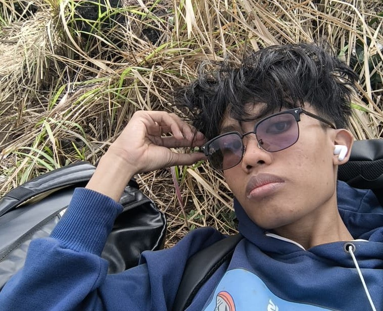

Halo semuanya! Perkenalkan, nama saya Maychel Agitya Prasetyo, mahasiswa aktif semester 3 di Program Studi Pendidikan Teknik Informatika dan Komputer (PTIK), Fakultas Keguruan dan Ilmu Pendidikan, Universitas Sebelas Maret (UNS). Sejak awal melangkah di dunia perguruan tinggi, saya memiliki ketertarikan yang sangat tinggi terhadap perkembangan dunia teknologi informasi dan komunikasi. Bagi saya, bidang ini bukan sekadar disiplin ilmu akademis, melainkan sebuah ekosistem dinamis yang terus berinovasi dan memberikan ruang luas untuk mengeksplorasi potensi diri, memecahkan masalah kompleks melalui pendekatan logis, serta menciptakan solusi digital yang bermanfaat bagi masyarakat luas.
Untuk membangun fondasi karier yang solid di industri modern, saat ini saya secara spesifik memfokuskan pemahaman dan keterampilan praktis saya di bidang software development, networking, serta data science. Di luar aktivitas perkuliahan rutin, saya senantiasa proaktif mengasah kemampuan teknis dan manajerial dengan mengikuti berbagai program sertifikasi profesional, workshop desain dan pengembangan, hingga pengerjaan proyek mandiri berbasis web dan olah data. Melalui kombinasi antara pemahaman akademis yang kuat dan pengalaman praktis yang terus diasah, saya berkomitmen untuk menjadi talenta digital yang adaptif, kompeten, dan siap menghadapi tantangan serta dinamika di era transformasi digital saat ini.